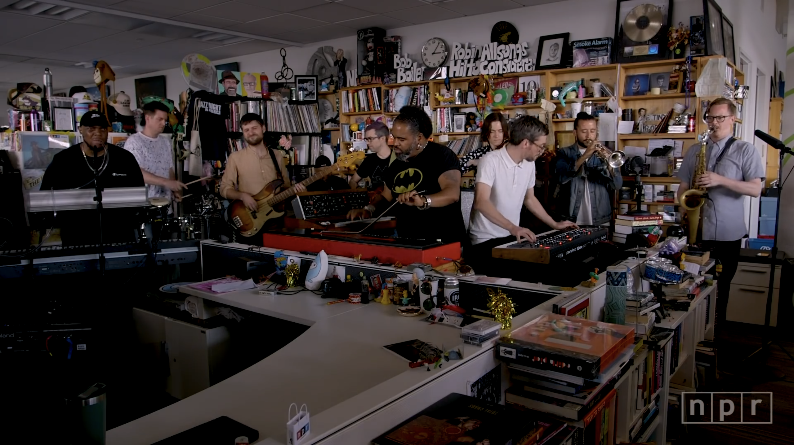
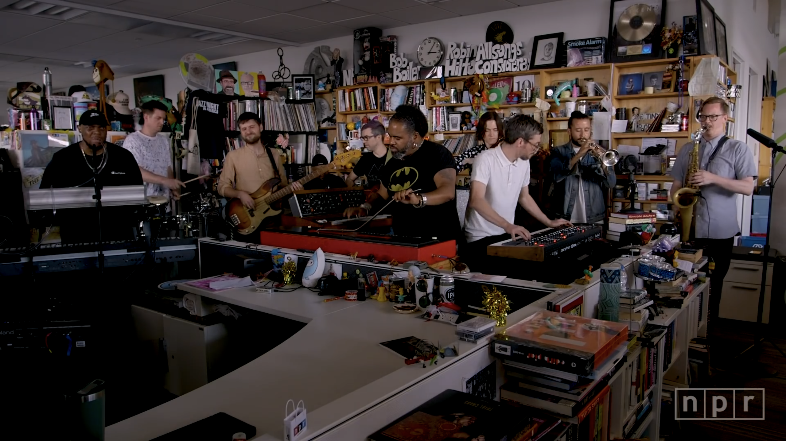

Day 61

Snarky Puppy ◆ NPR Music Tiny Desk Concert ◆ 2019
今天我一边修余日摇滚上日文的显示问题，一边听油管。油管给我推荐了一串 Tiny Desk Concert。其中有这个乐队，我之前听过一遍，当时感觉还好，这回感觉更好听了，就发上来。我听他们的演出立刻想到星际牛仔www
Snarky Puppy ◆ NPR Music Tiny Desk Concert ◆ 2019
今天我一边修余日摇滚上日文的显示问题，一边听油管。油管给我推荐了一串 Tiny Desk Concert。其中有这个乐队，我之前听过一遍，当时感觉还好，这回感觉更好听了，就发上来。我听他们的演出立刻想到星际牛仔www